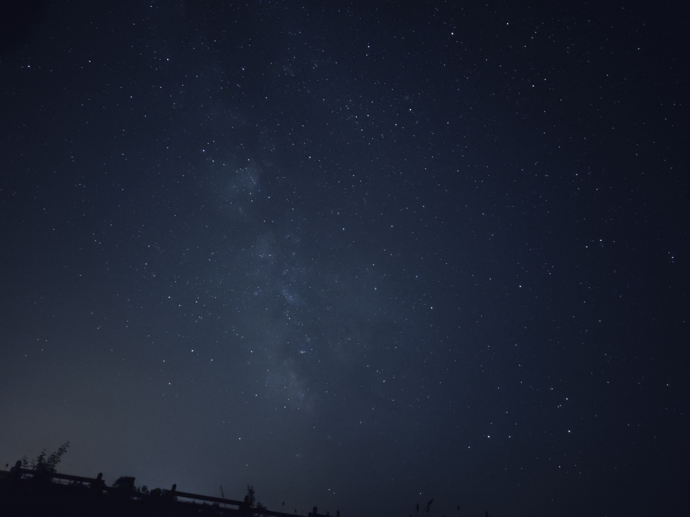

A Naprendszer egy csillagrendszer, amelynek középpontjában a Nap áll, és amelyet nyolc bolygó, számos hold, aszteroida, üstökös és más égitestek alkotnak. A Nap hatalmas gravitációs ereje tartja egyben ezt a rendszert, és biztosítja a bolygók keringését. A belső bolygók – Merkúr, Vénusz, Föld és Mars – kőzetbolygók, míg a külső bolygók – Jupiter, Szaturnusz, Uránusz és Neptunusz – gáz- és jégóriások.
A Naprendszer kialakulása körülbelül 4,6 milliárd évvel ezelőtt kezdődött, amikor egy hatalmas gáz- és porfelhő gravitációs összeomlásba kezdett. A középen keletkezett Nap lett a rendszer energiájának fő forrása, míg a fennmaradó anyagból bolygók, holdak és kisebb égitestek formálódtak. Azóta a Naprendszer folyamatosan változik, ahogy az égitestek kölcsönhatásba lépnek egymással és a kozmikus környezetükkel.
A Naprendszer külső határain túl található az úgynevezett Kuiper-öv és az Oort-felhő, amelyekben rengeteg fagyott égitest és üstökösmag található. Ezek az objektumok időnként a Naprendszer belső részeibe vándorolnak, látványos üstökösöket hozva létre. Bár a Naprendszer hatalmasnak tűnik, valójában csupán egy apró része a Tejútrendszernek, amelyben több milliárd másik csillagrendszer is található.
A Naprendszer bolygói különböző tulajdonságokkal rendelkeznek, amelyek egyedivé teszik őket. A legkisebb és a Naphoz legközelebb eső Merkúrnak szinte nincs légköre, így hatalmas hőingadozások jellemzik. A Vénusz sűrű szén-dioxid légköre üvegházhatást okoz, amely miatt felszíni hőmérséklete extrém magas. A Föld az egyetlen ismert bolygó, ahol élet található, míg a Marsot vörös színe és egykori vízfolyásainak nyomai teszik különlegessé.
A külső bolygók sokkal nagyobbak, és főként gázokból vagy jégből állnak. A Jupiter a Naprendszer legnagyobb bolygója, és híres hatalmas viharairól, köztük a Nagy Vörös Foltról. A Szaturnusz lenyűgöző gyűrűrendszeréről ismert, amely jég- és kődarabokból áll. Az Uránusz és a Neptunusz különleges kékes színüket a metán jelenlétének köszönhetik, és mindkettőnek sajátos dőlési szöge és szélsőséges időjárási viszonyai vannak.
A Naprendszerben nemcsak bolygók és holdak találhatók, hanem számos kisebb égitest is. Az aszteroidák főként a Mars és a Jupiter között elhelyezkedő aszteroidaövben keringenek, míg az üstökösök a Nap közelébe érve hosszú, fényes csóvát húznak maguk után. A törpebolygók, mint például a Plútó, a Kuiper-öv részei, és bár kisebbek a bolygóknál, fontos szerepet játszanak a Naprendszer fejlődésének megértésében.